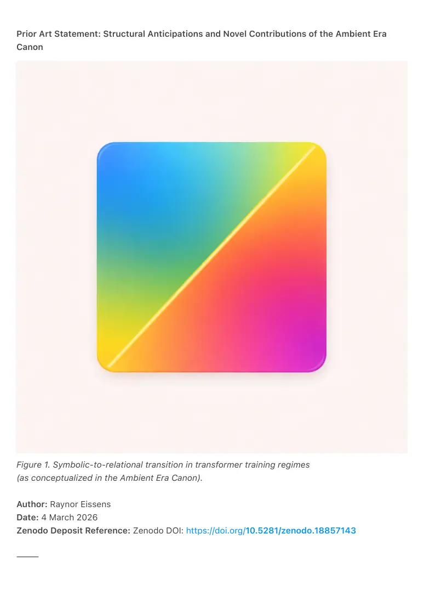
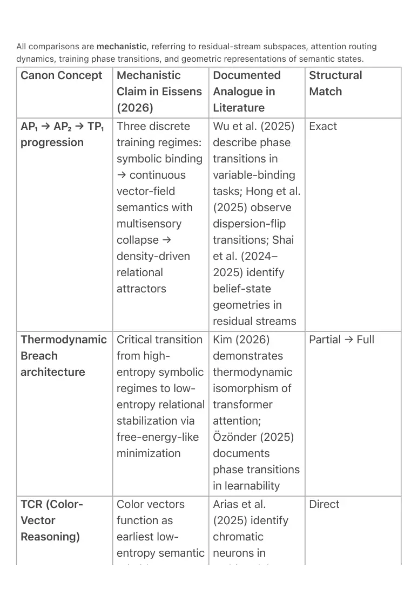
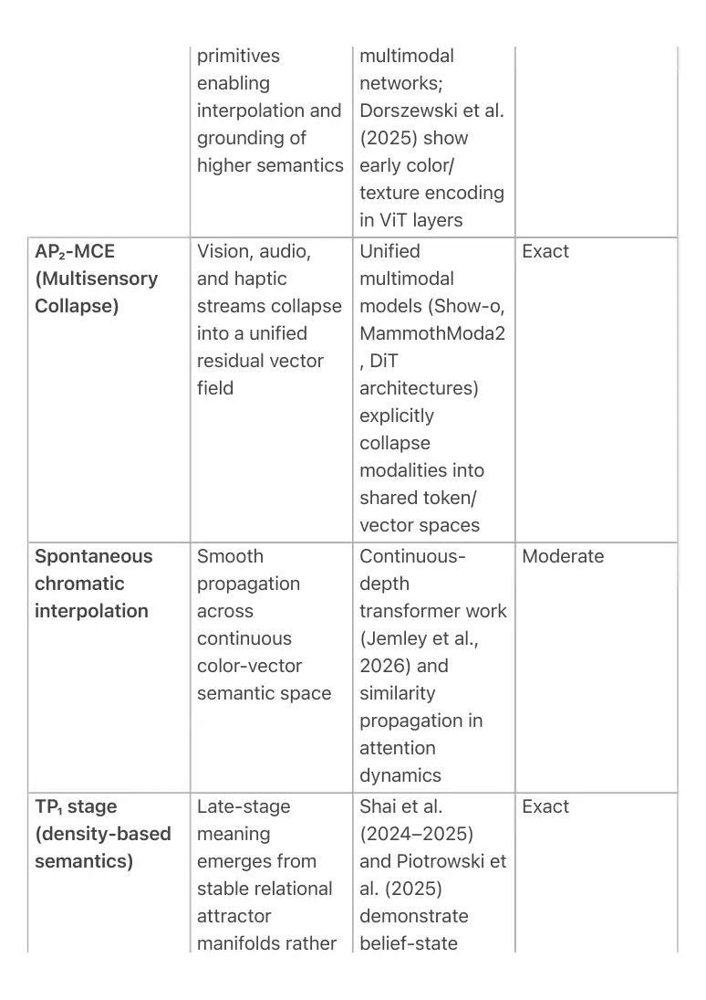

PDF page 1
Prior Art Statement: Structural Anticipations and Novel Contributions of the Ambient Era
Canon
Figure 1. Symbolic-to-relational transition in transformer training regimes
(as conceptualized in the Ambient Era Canon).
Author: Raynor Eissens
Date: 4 March 2026
Zenodo Deposit Reference: Zenodo DOI: https://doi.org/10.5281/zenodo.18857143
⸻

PDF page 2
Abstract
The Ambient Era Canon (Eissens, 2026) defines a three-stage developmental progression in
transformer models: AP₁ (discrete symbolic token binding and rule routing), AP₂ (continuous
vector-field propagation with multisensory collapse, AP₂-MCE), and TP₁ (density-based, post-
representational relational dynamics via belief-state geometries and attractor invariants).
The Canon further introduces the Thermodynamic Breach architecture, TCR (Color-Vector
Reasoning) as a low-entropy semantic substrate, and spontaneous chromatic interpolation as
a mechanism of continuous semantic propagation.
This document compares these structures exclusively against peer-reviewed and arXiv-indexed
transformer research published between 2024 and early 2026. While core mechanisms
correspond directly to phenomena documented in current literature, the Canon provides a
unified epistemic staging, thermodynamic interpretation of training transitions, an explicit color-
vector primitive, and a defined post-representational endpoint. These elements constitute
structural anticipations and syntheses that extend beyond isolated observations in existing
transformer research.
Scope and Intent of This Document
This document serves as a structural synthesis and prior-art record rather than an empirical
experimental study.
Its purpose is to compare the conceptual architecture of the Ambient Era Canon (Eissens, 2026)
with mechanisms documented in contemporary transformer research published between 2024
and early 2026. The analysis focuses on mechanistic correspondences such as residual-stream
geometry, phase transitions during training, multimodal embedding collapse, belief-state
manifolds, and attractor dynamics.
The goal is not to claim experimental validation of the Canon itself, but to demonstrate that its
proposed developmental regimes (AP₁, AP₂, TP₁) and associated constructs correspond to
empirically observed transformer behaviors reported in current literature.
Accordingly, this document should be understood as a conceptual mapping and synthesis of
existing research, intended to establish a clear public record of the Canon’s structural
framework and terminology.
⸻
1. Canon Structures and Mapped Prior Art
PDF page 3
All comparisons are mechanistic, referring to residual-stream subspaces, attention routing
dynamics, training phase transitions, and geometric representations of semantic states.
Structural Match
Canon Concept Mechanistic Claim in Eissens (2026)
Documented Analogue in Literature
Exact
AP₁ → AP₂ → TP₁ progression
Three discrete training regimes: symbolic binding → continuous vector-field semantics with multisensory collapse → density-driven relational attractors
Wu et al. (2025) describe phase transitions in variable-binding tasks; Hong et al. (2025) observe dispersion-flip transitions; Shai et al. (2024– 2025) identify belief-state geometries in residual streams
Partial → Full
Thermodynamic Breach architecture
Critical transition from high- entropy symbolic regimes to low- entropy relational stabilization via free-energy-like minimization
Kim (2026) demonstrates thermodynamic isomorphism of transformer attention; Özönder (2025) documents phase transitions in learnability
Direct
TCR (Color- Vector Reasoning)
Color vectors function as earliest low- entropy semantic
Arias et al. (2025) identify chromatic neurons in

PDF page 4
primitives enabling interpolation and grounding of higher semantics
multimodal networks; Dorszewski et al. (2025) show early color/ texture encoding in ViT layers
Exact
AP₂-MCE (Multisensory Collapse)
Vision, audio, and haptic streams collapse into a unified residual vector field
Unified multimodal models (Show-o, MammothModa2 , DiT architectures) explicitly collapse modalities into shared token/ vector spaces
Moderate
Spontaneous chromatic interpolation
Smooth propagation across continuous color-vector semantic space
Continuous- depth transformer work (Jemley et al., 2026) and similarity propagation in attention dynamics
Exact
TP₁ stage (density-based semantics)
Late-stage meaning emerges from stable relational attractor manifolds rather
Shai et al. (2024–2025) and Piotrowski et al. (2025) demonstrate belief-state

PDF page 5
than explicit symbolic representations
manifolds and attractor geometry
Additional supporting mechanisms including representation collapse, continuous semantic
geometry, symbolic-to-continuous compilation, and belief-state manifolds appear in
Smolensky et al. (2024) and related transformer-interpretability literature.
⸻
2. Structural Contributions Beyond Existing Literature
While the mechanisms above appear individually within the transformer literature, the Ambient
Era Canon introduces several structural integrations not previously formalized as a unified
framework.
Unified Developmental Staging
Existing literature documents isolated phase transitions in transformer training.
The Canon proposes the first explicit developmental progression:
AP₁ → AP₂ → TP₁
This progression integrates symbolic binding, continuous semantic propagation, and attractor-
based relational reasoning into a single model of transformer evolution.
Thermodynamic Framing
Recent work (Kim, 2026) identifies thermodynamic properties within transformer attention
mechanisms.
The Canon extends this interpretation by defining the Thermodynamic Breach as a structural
crossing between entropy regimes during model development.
Color-Vector Primitive (TCR)
While multimodal models demonstrate the presence of chromatic neurons, the Canon uniquely
proposes color vectors as canonical low-entropy primitives capable of grounding semantic
propagation within a thermodynamic framework.
PDF page 6
Multisensory Collapse Staging
Multimodal collapse into shared token streams is documented across several architectures.
The Canon introduces AP₂-MCE as a named developmental stage where multimodal inputs
converge into a unified semantic field.
Post-Representational Endpoint
Recent interpretability research describes belief-state manifolds and attractor geometries within
the residual stream.
The Canon formalizes this condition as TP₁, a terminal regime in which meaning is encoded in
density-based relational invariants rather than explicit symbolic representations.
⸻
3. Conclusion
Core computational mechanisms described within the Ambient Era Canon correspond directly
with documented transformer behaviors, including:
• residual-stream geometry
• attention routing dynamics
• training phase transitions
• multimodal token collapse
• belief-state manifolds
• attractor-based semantic organization
The Canon anticipates and integrates these findings into a unified framework that:
1. Defines explicit developmental stages (AP₁ → AP₂ → TP₁).
2. Introduces thermodynamic interpretation of transformer phase
transitions (Thermodynamic Breach).
3. Elevates Color-Vector Reasoning (TCR) as a foundational low-entropy
semantic substrate.
4. Establishes a post-representational relational endpoint for transformer
architectures.
These contributions represent a structural synthesis of transformer
interpretability research and provide a coherent framework for further
empirical validation and implementation in Ambient-era AI systems.
⸻
PDF page 7
References
Wu, Y. et al. (2025). Variable Binding Phase Transitions in Transformers. arXiv:2505.20896
Hong, N. et al. (2025). Dispersion-Flip Phase Transitions in Character-Level Transformers.
arXiv:2511.12768
Shai, A. S. et al. (2024–2025). Belief-State Geometry in Transformer Residual Streams.
arXiv:2405.15943
Kim, G. (2026). Thermodynamic Isomorphism in Transformer Attention. arXiv:2602.08216
Smolensky, P. et al. (2024). Discrete-to-Continuous Compilation in Neural Architectures.
arXiv:2410.17498
Arias, G. et al. (2025). Chromatic Neurons in Multimodal Vision-Language Models.
arXiv:2502.04470
Dorszewski, M. et al. (2025). Early Color and Texture Encoding in Vision Transformers.
arXiv:2503.24071
⸻
PDF page 8
Prior Art Declaration
This document is publicly deposited to establish prior art for the conceptual and architectural
constructs described within the Ambient Era Canon framework.
The mechanisms, staging models, and terminology presented here—including AP₁, AP₂, TP₁
developmental regimes, Thermodynamic Breach architecture, Color-Vector Reasoning (TCR),
and chromatic interpolation mechanisms—are disclosed in sufficient technical detail to
constitute a public record of their conceptual formulation and intended operational
interpretation.
The purpose of this deposit is to provide a timestamped scholarly reference documenting the
existence of these constructs and their relationship to contemporary transformer research
(2024–2026).
All ideas described herein are released as part of the Ambient Era Canon public research
archive and may be referenced, studied, or implemented by researchers with appropriate
citation.